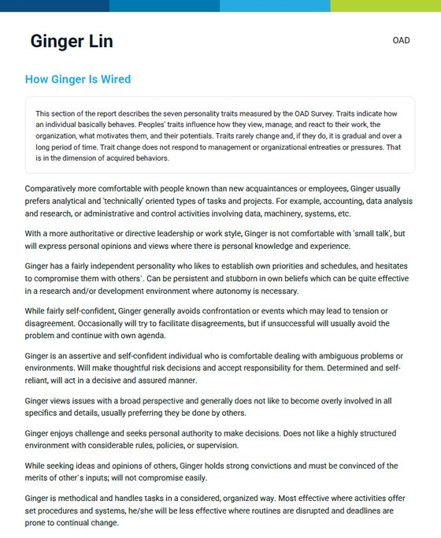
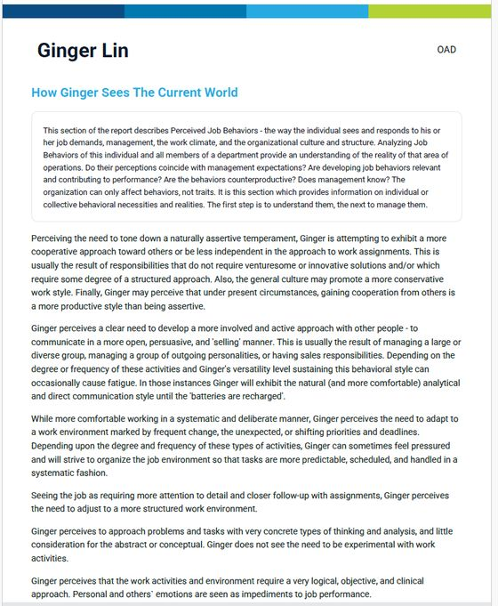
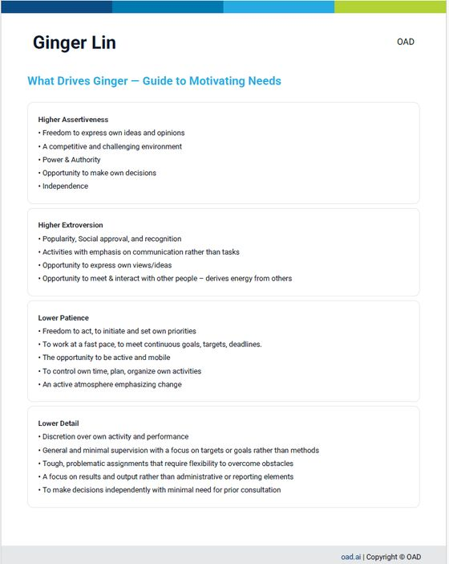

《把資歷變資產》企業讀者限定
績效開始下降以前，
人才錯配的訊號早已出現。
履歷、績效與年度考核，記錄的是已經發生的結果。真正影響人才效能的，可能是自然特質、目前行為與職務要求之間，正在擴大的距離。
人才動態管理協助企業在招募、晉升、培育與組織調整以前，先看清楚：
先釐清問題，再決定是否需要進一步評測。
等到績效下降或人才離開，
通常已經錯過最好的調整時機。
招募時看起來很適合，進來後卻無法穩定發揮
履歷與面試證明他做過什麼，卻不一定能看見：他的自然工作方式，能否長期承擔這個角色的要求。
高績效人才升任主管後，表現反而停滯
會做事，不等於會透過別人完成；優秀的個人貢獻者，也不一定已經準備好承擔管理責任。
員工沒有明顯退步，投入感卻逐漸下降
他可能仍能完成任務，只是需要長期使用不自然的行為維持表現，適應成本正在增加。
主管知道部屬「個性不同」，卻不知道具體怎麼帶
報告提供了特質描述，主管真正需要的卻是：現在可以怎麼問、怎麼溝通、怎麼調整任務。
培訓投入不少，成效卻難以落地
問題可能不在課程內容，而是沒有先確認：這個人真正需要發展的是能力、行為，還是工作配置。
接班名單有人選，卻無法判斷能否長期承擔
目前績效好，不代表適合下一個角色；短期做得到，也不代表能以合理的適應成本長期維持。
企業真正需要的，不是再多一份人才標籤，
而是更早看見「人、行為與位置」之間正在發生什麼變化。
從「這個人是什麼類型」
走向「他在這個位置如何發揮」
| 比較項目 | 一般單點式人格／行為測評 | 新型動態管理視角 |
|---|---|---|
| 主要觀察 | 個人特質或行為傾向 | 自然特質、工作中展現的行為與角色要求 |
| 輸出方式 | 類型、標籤或特質描述 | 連續尺度的行為資料與工作情境差距 |
| 核心問題 | 這個人是什麼樣的人？ | 他如何自然運作？工作要求他如何表現？兩者距離多大？ |
| 適配判斷 | 人與職位的靜態配對 | 特質、後天行為、現職與未來角色交叉比較 |
| 主管應用 | 理解溝通風格與優缺點 | 找出驅動因子、壓力反應、管理與教練切入點 |
| HR協作 | 提供報告與共通語言 | 讓HR與用人主管針對具體情境討論 |
| 後續發展 | 容易停留在「知道」 | 轉化為面談、任務配置、培育與角色調整假設 |
| 決策定位 | 容易被誤用為定論 | 作為結構化資訊之一，仍需結合績效、能力與對話 |
新型動態管理工具使用兩組相同的形容詞題目，分別蒐集個人的基準傾向，以及他認為工作要求自己展現的行為。兩者的差距，可以作為角色壓力、持續適應或環境摩擦的觀察訊號。
資料來源：OAD Survey Guide ↗同一個人，為什麼在不同位置
會出現完全不同的表現？
自然特質
一個人較自然的工作方式，例如如何做決定、影響他人、面對壓力，以及偏好的速度、結構與責任方式。
目前展現的行為
為了回應主管、團隊與工作要求，他目前正在如何調整自己？
角色與情境要求
目前職位、主管、團隊與下一階段，真正要求他長期展現什麼？
- 哪些要求與他的自然優勢一致？
- 哪些行為已經透過經驗發展出來？
- 哪些差距需要刻意適應？
- 這種適應能否長期維持？
- 需要培訓、管理調整，還是重新配置角色？
STEP 1 ｜ 理想職務特質與受測者本身特質的差距
中文示意：該職務理想特質與該員目前展現的特質
示意圖，非真實測評數值。七項構面名稱與兩端敘述翻譯自OAD官方報告原文；落點僅為示意，實際結果因人而異。
能夠做到，不等於做起來不需要消耗。
動態管理關注的是：當角色、主管與工作要求改變，一個人是否仍能長期、穩定地發揮價值。
STEP 2 ｜ 解讀差距
理解特質差距的六步驟快速解讀
提供企業內部理解報告落點時的基本判讀順序，並非鼓勵自行對員工做臨床式判讀。
先看四項主要特質的相對高低
主導性、外向性、耐心度、細節導向這四項之間，哪一項最突出（主特質）、哪一項次之（次要特質）、哪些相對不明顯。重點是彼此的相對關係，不是單一分數的高低。
主導性 vs 細節導向：通才或專才傾向
主導性高於細節導向，傾向通才型，能同時處理多條線、重視整體方向；細節導向高於主導性，傾向專才型，重視精確與流程；兩者相當，則兩種傾向兼具。
外向性 vs 細節導向：社交或技術導向
外向性高於細節導向，傾向透過人際互動完成工作；細節導向高於外向性，傾向透過專業與流程完成工作。兩者相當時，若同屬主特質，社交傾向較明顯；若同屬次要特質，技術傾向較明顯。
耐心度 vs 主導性：步調與耐心
耐心度高於主導性，步調較穩定從容；耐心度低於主導性，步調較快、傾向多工並進。兩者相當時，若同屬次要特質，急迫感與多工傾向更明顯；若同屬主特質，耐心與按部就班的傾向更明顯。
應變彈性：能調整多少、能撐多久
分數偏低，行為模式較穩定、不常因情境調整；中等，能依情境做一定程度調整；偏高，能因應不同情境靈活調整行為，且能長時間維持——這也是判斷「適應成本」的關鍵指標。
情緒掌控與思考風格：感性理性、務實創新
情緒掌控分數偏低，情感表達較外顯、感性；偏高，較理性冷靜、自我克制。思考風格分數偏低，較務實、依循既有做法；偏高，較具創意、願意嘗試新方法。
七項特質模型具備40年歷史、信效度研究基礎（Big Five/Cattell理論）
協助你用清晰指標，和團隊展開對話。
STEP 3 ｜ 具體可執行的指導方向
HR與主管需要的，不只是「看懂一個人」，
而是知道接下來可以怎麼談、怎麼帶。
傳統模糊評語
- 他不夠積極
- 他抗壓性不好
- 他沒有企圖心
- 兩個人個性不合
動態管理進一步釐清的問題
- 是自然驅動不足，還是角色缺乏決策空間？
- 是能力不足，還是主管的溝通方式不容易被對方接收？
- 是短期壓力反應，還是長期的人職錯配？
- 是個人問題，還是多人都承受相同的角色設計壓力？
報告部分內容示意

Is Wired
指標價值：該名受測者不受工作要求影響、最自然的決策與互動方式。
企業節省的成本與風險：招募與配置前，先看見這個人壓力下最可能出現的反應，減少「面試表現好、長期卻不適配」造成的重複招募與訓練成本。

The Current World
指標價值：這個人目前正在如何調整自己，回應主管與工作要求。
企業節省的成本與風險：及早看見他正在哪些地方勉強自己維持表現，在投入感下降或提出離職之前提前介入，而不是事後補救。

— Guide to Motivating Needs
指標價值：什麼樣的環境、授權方式，最能讓這個人穩定發揮。
企業節省的成本與風險：縮短主管摸索「怎麼帶這個人」的時間，減少因為「帶錯方式」流失人才、拖慢團隊產出。
節錄自OAD官方示範報告英文原版，僅供說明報告呈現形式。
從「我知道他們不一樣」，
走向「我更清楚現在可以怎麼問、怎麼談、怎麼調整」。
從診斷方法，到具體工具
人才動態管理不是抽象概念。以下依OAD官網最新公告整理，分為「目前可用」與「規劃中」，避免把尚未上線的功能誤植為已上線。
行為診斷
約7分鐘的行為診斷，採「選詞」而非「是非題」形式，觀察一個人在壓力與人際互動下的自然反應。
績效表現輪廓
將結果量化為多個行為構面，並與角色基準做比對，呈現差距而非標籤。
健康指標
辨識過度耗用、投入不足、離職傾向與壓力等訊號，協助在績效明顯下滑以前示警。
ATS／HRIS與工作流程整合
目前與Greenhouse、Workday、BambooHR等系統整合，並支援Slack、MS Teams等工作流程串接。
AI輔助教練案例（v1.5）
以credit制提供，協助主管針對具體績效問題，找到可以切入的溝通與帶人方式。
- Performance Drift Detection —— 連結CRM資料，及早示警行為訊號變化。
- Manager Coaching Playbook —— 依每位員工的行為剖析，提供更具體的下一步建議。
- Salesforce、HubSpot等CRM整合。
- 專屬行為語言模型，結合Claude等大型語言模型使用。
以上規劃中功能之實際上線時間與內容，以OAD官方公告為準。
一份行為剖析報告，實際上呈現什麼？
多項行為構面的量化分數
將自然特質與目前行為，拆解為多個可比較的構面分數，而不是單一標籤或類型。
與角色、高績效者的比對
把個人分數對照角色基準與同類職務中高績效者的模式，具體看出差距在哪裡。
錯誤配置風險的量化參考
提供錯誤配置對產出、時間與團隊產能可能造成的影響，作為對話的量化起點，而非精算報價。
奠基於大規模比較基準
比對基礎來自OAD官方所稱超過1,000萬筆歷史評測資料，細節仍建議於對談或技術文件中進一步確認。
他需要什麼樣的工作環境，才能穩定發揮？
- 決策的自主權有多大
- 能不能表達自己的看法
- 細節與跟催工作，能不能授權出去
- 例行任務與變動任務的比例
主管可以怎麼帶，而不只是「知道他是誰」？
- 什麼情境該多給空間，什麼情境要給明確清單
- 用什麼方式溝通，他比較聽得進去
- 壓力上升時，該先調整任務還是溝通方式
- 這個行為長期維持，是否需要額外支持
OAD衡量什麼——以及為什麼每個構面都能預測績效
每個構面都經過38年、40多個產業的實際績效資料獨立驗證。五項構面共同組成一份行為指紋，用來預測一個人在特定職務中「會如何表現」，而不只是「看起來合不合適」。
驅動力
衡量內在動機與目標導向行為的強度。驅動力高，預示著即使遭遇拒絕仍能持續投入、主動出擊，並在業務型角色中達成配額目標。
那位上一季被你刷掉的業務？他很可能是你的下一位頂尖業務。你永遠不會知道。
影響力
衡量說服、激勵與建立關係的自然傾向。預示著面對客戶時的表現、領導力的浮現，以及在複雜利害關係人環境中的應對能力。
業務、客服與人員管理職務的優異表現。
韌性
衡量在壓力、拒絕與不確定性下維持表現的行為能力。是留任率與高壓職務下穩定產出的關鍵預測指標。
留任率、穩定度，以及高壓下的表現。
結構性
衡量對系統化、程序化與規則導向環境的偏好。結構性高，預示著在需要按既定標準穩定執行的職務中，具備營運上的可靠度。
營運、法遵與高執行密度職務中的優異表現。
領導力
衡量培養、指導他人並為他人成果負責的行為驅動力。預示管理成效——且與個人貢獻者本身的績效表現無關。
管理成效與團隊培育能力。
這份報告的用途，是提供主管與HR在對談時可以具體討論的量化依據——不是用來單方面下結論，也不會取代績效證據、結構化面談與企業自身的用人判斷。
資料來源：oad.ai/the-science ↗真正的成本，不只是一份評測多少錢。
錯誤招募成本
招募、磨合、培訓、管理時間與重新招募的成本。
錯誤培育成本
在沒有釐清問題以前，持續投入不適合的課程與資源。
人才錯配成本
對的人被放在不適合的位置，績效可能暫時維持，投入感與長期價值卻逐步下降。
成本優勢不只在評測費用，而在於減少錯誤招募、無效培訓與人才錯配造成的反覆投入。
新型動態管理工具目前採依團隊規模與使用量配置的credit模式，而非以每位系統使用者收費；實際方案仍須依企業規模與需求確認。
來源：oad.ai/pricing ↗想先大致估算離職與錯配的成本？
新型動態管理工具提供一個延伸試算工具，協助粗估人才流動的財務影響，可作為對談前的參考起點，非正式估價。
哪些人才決策，適合使用動態管理工具進行參考？
人才盤點與招募適配
辨識誰正在成長、誰正在消耗、誰可能只是被放錯位置；也在履歷、面試與專業能力之外，補上工作行為與角色適配的結構化資料。
接班與晉升評估
比較現職表現、自然特質與下一個角色要求，不只用現在的績效預測未來。
新任主管發展
看見從個人貢獻者轉為主管後，哪些行為可以延伸，哪些需要重新建立。
團隊衝突與跨部門協作
把「個性不合」拆解為決策速度、資訊需求、影響方式與角色期待的差異。
留才與投入感下降
在績效明顯下降或提出離職以前，辨識角色壓力、動機位移及適配變化。
ESG公司治理
金管會持續強化上市櫃公司的永續與公司治理資訊揭露；在永續報告書及公司治理相關揭露中，員工新進與離職情形、教育訓練成果，以及董事與重要管理階層的接班規劃，都是企業日益重視的人力資本議題。人才動態管理平台提供量化參考指標，提供可佐證的決策脈絡。
適合對象
適合
- 50人以上的企業或事業單位
- 正在進行關鍵人才盤點、接班布局或組織調整
- HR已導入測評，但主管不知道如何落地使用
- 關鍵職位的招募與配置成本高
- 團隊投入感、協作或穩定度開始下降
- 希望HR與用人主管建立共同的人才判斷語言
- 需準備ESG永續報告書，關注接班布局與人才留任的企業
可能不適合
- 希望只靠一份測評決定錄取、晉升或淘汰
- 想用人格標籤替代能力與績效證據
- 不願提供職務要求、管理情境或實際案例
- 已經決定答案，只希望測評替決策背書
- 難對「優秀表現」形成一致標準的專案型或高度依賴個人手藝的工作。
測評的目的不是替企業決定答案，而是提供更完整、可以被討論的資訊。
不是相信一份報告，
而是確認它能支持什麼決策。
信度
在合理條件下重複使用時，工具是否能穩定測得相近的構念，而不是被偶然因素大幅影響。
效度
工具是否測到它宣稱要測的內容，並能為特定的人才決策提供合理證據。
效標關聯效度
檢查評測分數與工作表現、留任、產出及主管評價之間的關聯。
內容效度
確認題目測量的是工作相關的行為驅動，而非認知能力或受保護的人口特徵。
建構效度
以因素分析檢視行為構面的結構是否穩定。
不是先決定導入工具，
而是先確認真正需要處理的問題。
填寫企業現況
提供公司與團隊規模、目前的人才課題、涉及職位，以及已使用的測評或人才制度。
進行線上對談
以30～45分鐘了解問題目前如何被看見、現有資料能回答什麼，以及還缺少哪些關鍵資訊。
提出下一步建議
可能結果：
- 暫時不需要導入評測
- 先釐清職務或管理問題
- 選擇小規模對象進行評測與解讀
- 進一步規劃人才盤點、團隊或接班應用
你可能想先知道
預約線上對談會推銷這套工具嗎？
不會。對談會先了解你目前的人才課題、企業規模與既有制度，協助釐清問題可能出在能力、管理方式，還是人才配置。只有在評測確實能補足現有資訊時，才會討論後續應用方式。
新型動態管理工具可以直接判斷一個人是否適任嗎？
不建議用任何單一測評斷論您的人才是否適任。新型動態管理工具提供的是驅動工作動機相關的行為資料，仍需搭配職務要求、專業能力、績效證據、結構化面談，以及HR與用人主管的判斷。
新型動態管理工具和一般人格測驗有什麼不同？
一般人格測驗多半描述一個人的特質或類型；新型動態管理工具則同時觀察個人的自然傾向，以及他認為目前工作要求自己展現的行為。兩者的差距，可以作為角色壓力、長期適應與人才配置的討論依據。
評測需要幾分鐘？
約10分鐘。題目採選詞形式作答，不需要長時間思考，建議在不被打斷的情況下完成，答案品質會更接近真實狀態。
有中文介面嗎？
有。新型動態管理工具提供包含中文在內的多語言版本，介面與題目皆可切換為中文使用。實際版本仍會依貴公司使用族群，在對談中一併確認。
1,000萬筆資料多是歐美的數據，適合華人或亞洲企業嗎？
這也是我們認為特別值得說清楚的一點。其實不只新型動態管理工具，現行大多數管理學理論本來就多半源自西方企業實踐。但東方對「人」的理解從來不是空白的——《易經》談陰陽動態平衡，儒家談中庸，關注的本來就是「因時因地制宜」，而不是非黑即白的定論。
新型動態管理工具採用的是「強迫選擇」（forced-choice）行為測量格式，而不是「你同不同意這個特質標籤」的量表題型——問的是「你比較傾向怎麼做」，而不是「請幫這個特質打幾分」。這個設計本身，正是心理測量學界研究用來降低不同文化「評分習慣落差」（response style bias）的方向之一，跨文化比較研究也持續在進行，例如針對強迫選擇格式的跨國樣本比較。以行為出發、而不是以特質標籤出發，某種程度上更接近東方看待人的方式：看一個人在具體情境下如何動態調整，而不是把人一次性歸類。
當然，這不代表完全沒有文化差異需要留意。OAD官網並未公開亞洲樣本的詳細佔比，這部分我們仍建議在對談或技術文件審查時，依貴公司實際使用族群進一步確認。
來源：oad.ai/the-science ↗
哪些企業適合預約這場對談？
較適合50人以上，正在進行關鍵人才盤點、接班布局、重要職位招募、主管培育或組織調整的企業。若還不確定問題是否適合使用評測，也可以先透過對談釐清。
參加對談以前，需要準備什麼？
只需簡單提供企業與團隊規模、目前最想處理的人才課題、涉及的職位或對象，以及過去曾使用的測評或管理方式。不需要事先購買系統或完成評測。
評測資料會如何被使用？
資料僅用於約定的評測、解讀與人才管理討論，不會在未經同意的情況下提供給無關第三方。若進一步導入，企業也應事先向參與者說明評測目的、使用範圍與資料保存方式。
有免費試用嗎？
已為台灣企業讀者跟SIFU DAN申請到「頂尖績效者免費輪廓分析」（Free Top Performer Profile），完成評估只需七分鐘，24 小時內即可取得結果，不需要提供信用卡，也不需要任何合作承諾。
導入費用很高嗎？
這是一個很值得關切的課題。相信貴公司在進行一項投資的決策，都會計算ROI（投資報酬率），所以，最終還是回歸到使用體驗與成效。新型動態管理工具採用依團隊規模與使用量配置的credit制，依企業規模（建議50人以上）、導入範圍與整合需求，提供不同的年度方案，預估每年總投資是一萬美金起跳。雖然不算高，但比起「投資金額」，更值得您先釐清的是：一次錯誤招募、一次無效培訓，或一位關鍵人才的錯配，實際會讓您付出多少成本。這也是我們建議先透過對談確認需求，並提供一位關鍵人才試用、讓貴公司實際體驗的原因——希望您投資在刀口上，對我們來說，也是持續累積正面實績的加分。您也可以先到人才成本試算工具，大致估算一下。
Pricing for Revenue Teams｜OAD.ai ↗
能與公司原本的HRIS相容嗎？
系統可依企業方案提供ATS／HRIS整合，實際串接方式會在對談中依貴公司現有系統進一步確認。
在投入更多招募、培育與留才成本以前，
先確認問題到底在哪裡。
如果你還不確定，現在面對的是能力問題、管理問題，還是人才配置問題，可以先透過一場線上對談，整理現況與需要補足的資訊。
進一步了解適合50人以上，正準備進行關鍵人才盤點、接班布局、關鍵招募或組織調整的部門或企業。
你提供的資料只用於本次需求判斷與對談安排；未經同意，不會提供給其他單位，也不會以評測結果取代企業的用人判斷。